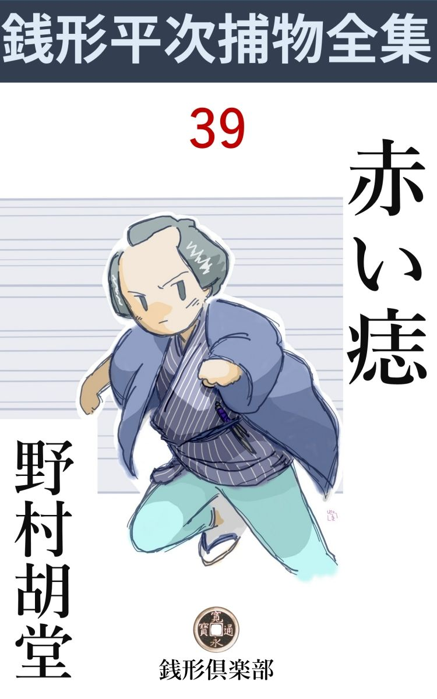
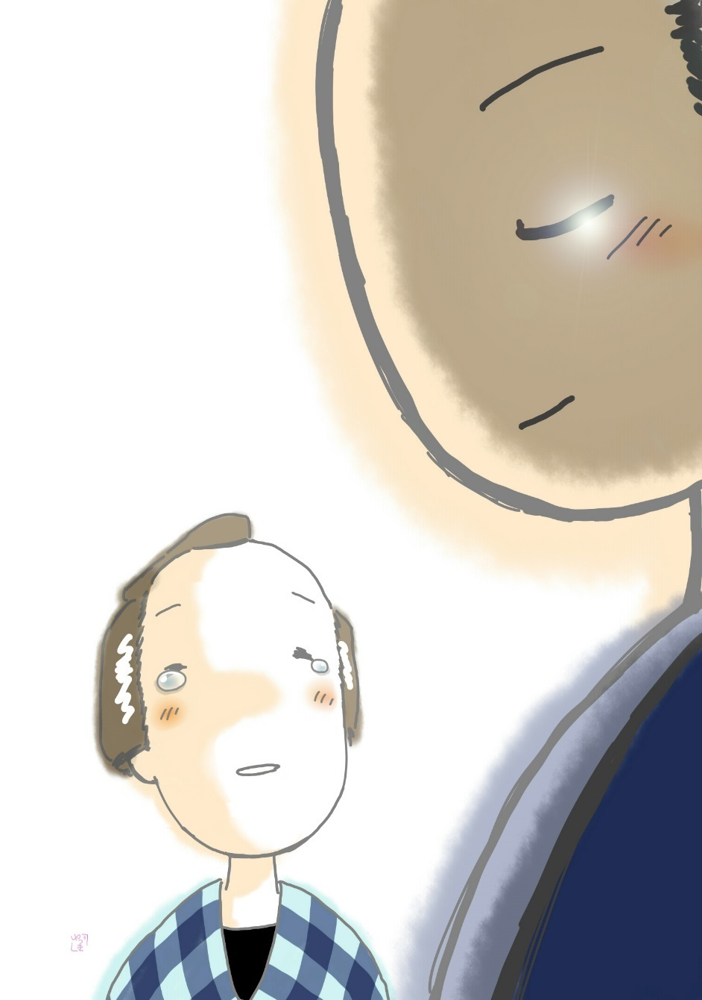

| 赤い痣: 銭形平次捕物全集第39話 (銭形倶楽部) | |
| 野村胡堂 | |
| ZENIGATA CLUB (2018) | |

一
江戸名物の御用聞銭形の平次が、後にも前にもこんなひどい目に逢ったことがないという話。
「親分、変な強盗 が流行 るそうですね」
「それだよ、八。笹野の旦那にも呼びつけられて、散々油を絞 られたんだが、十手捕縄を預ってから、俺はこんな馬鹿な目に逢ったことはねえ」
「笹野の旦那まで、親分が泥棒だと仰しゃるんですか。畜生ッ」
「これこれ何を言うんだ、------笹野の旦那はあの通り分った方だ。まさかこの平次が強盗をやろうと思っていらっしゃるわけじゃないが、何分世間の噂がうるさい。早く捕 まえて正体を見せるようにと------こういう話だ」
平次が悄気 返るのも無理はありません。一と月ばかり前から、江戸中を荒し廻る恐ろしい強 盗 、時には女もさらえば、人も害 める兇悪 無慙 なのが、------銭形平次らしい------という噂が立ったのです。
別段、『俺は銭形平次------』と名乗るわけではありませんが、物腰から背 恰 好 、声の調子、ちょいとした癖まで、妙に平次に似ているのと、時々平次でなければならない事をするので、噂が次第に根強い疑いになり、遂には長い間に築き上げた平次の人気と名声も、これが動機で一ぺんに叩 き潰 されてしまいそうにさえ見えるのでした。
「親分、引っ込んで居ちゃ、世間の疑いが晴れっこはありません。縄張なんかにこだわらずに、荒した跡を一目見て廻ったらどんなものでしょう」
「成程、それも思いつきだろう。変な顔をされるのを覚 悟 で、一軒一軒虱潰 しに当って見るとしようか」
平次は早速その作戦に取りかかりました。一番最初に行ったのは神谷町の酒屋伊 勢 徳 、この辺は柴井町の友次郎の縄張ですが、平次一期の浮 沈 に拘 わることで、日頃仲の悪い友次郎の思惑などを考えちゃいられません。
「御免よ」
「あッ、銭形の親分さん」
番頭は真っ蒼になりました。不意に幽霊でも見たような心持だったのでしょう。
「私を知っていなさるのかえ」
「へえ------」
「強盗に入られた時の様子を詳 しく聞きたいが」
平次はさり気ない顔で帳場格子の前に腰をおろしました。
「どうぞ、奥へお通り下さい、店じゃ------」
「商売に障 るというのか、八、それじゃ暫らくお邪魔をさせて貰おうか」
番頭に案内されて奥に通ると、主人の徳七は、それでも機嫌よく迎えてくれました。
「銭形の親分さん、御苦労様で」
「御主人は私を知っていなさるだろうね」
「へエ、よく存じております」
「強盗 の入った日のことを復習 して貰いたいが」
平次とガラッ八は、煙草盆を隔 てて、近々と主人の徳七と相対しました。五十二三の名前の通り福徳円満な顔です。
「丁度一と月ばかり前のことで御座います。御上の御用だからと言って、子 刻 過ぎに表戸を小僧に開けさして入って来た者が御座います。臆病 窓 から見た時は顔を出していたそうですが、中へ入ると頬 被 りをしておりました。いきなり十手を出して小僧に喰 わせると、奥へ案内させて、寝ていた私を足 蹴 にして起し、その日の売 溜 と、それから少しばかりの払いの用意に取って置いた金を持って行かれました。いえ、金はほんの十両ばかりで御座いますが、手代の惣吉が飛出して御近所の方を呼んで来ようとすると、後ろから呼止めて、振り返ったところへ、今盗ったばかりの売溜の中の、銭を一枚投げられて、左の眼を潰 されてしまいました。可哀相に、まだ源助町 の眼医者に通っておりますが、生れも付かぬ不具 になりそうで御座います」
「それは気の毒だ」
平次もこう言うより外はありません。そこへ番頭は怪我人の惣吉を伴 れて来て、左の眼を巻いた白布を取って見せました。腫 れは引きましたが、眼の玉は痛々しく潰 れて、物の役に立とうとも思われません。二十三四の惜しい男振りです。
「こんなひどい目に逢わされました。親分さん、どうぞ、仇を取ってやって下さいまし」
そう言う惣吉の顔に、皮肉な表情のあるのを、見のがすような平次ではなかったのです。
「その強盗 が、私に似ていたそうだね」
「へエ------」
と惣吉。
「これこれ、失礼なことを申上げては------」
主人の徳七はあわてて止めましたが、
「背の恰好、反り身になる時の具合、お言葉の様子、そっくりと申したい程で御座いますよ」
眼一つ潰 された怨 みのせいか、惣吉は歯に衣 を着せません。
「その上、十手を持って歩いて、投げ銭まで器用では、本人の俺 が見ても疑いたくなるだろう。まアいい、そのうちに尻尾を掴んで、仇を取ってやる折もあろう」
平次はそんな事を言って、そこそこに引揚げました。
憂欝 な四月 空 、桜は散りましたが、梅 雨 前の気圧が、妙に人間の心を灰色に沈ませます。
二
「親分、次は」
「車坂 の質屋だ」
五軒目が桔梗屋 喜兵衛。ここでは偽平次、一家残らず縛り上げて、有金百両余りと、少し浮気っぽいと言う評判はあったが、下谷一番と言われた小町娘のお藤 をさらって行ったのです。
「ツイ十日ほど前の晩で御座いました。寅刻 近い頃、どこから入ったとも判らぬ男が、店中の者を一人ずつ縛り上げた上、百両ばかりの金を用 箪 笥 から出させ、娘に猿轡 を噛ませて、裏口から飛出してしまいました。あんまり手際が良いので、忍術使いか何かじゃあるまいかと申しております」
主人の喜兵衛は四十男ですが、如何にもがっかり した様子で説明してくれます。
「お藤さんの行方 は？」
と平次。
「それっきり判りません。三輪 の万七親分は、店中の者を一人残らず縛った手際は、捕 縄 を扱い馴れた者の仕業だ------と仰しゃいましたが」
「------」
ここにも平次に対する濃厚な疑い、------さすがにはっきり は言いませんが、主人の眼には疑惑が満ちます。
「つかない事を訊くようだが、------お藤さんに親 しい男でもなかったろうか」
「世間ではいろいろ噂があったようですが、取立てて親しい男があったとは存じません。もっとも、近いうちに、湯島の山崎屋専助へ嫁 にやる筈で、祝言の日取りまで決めておりました。金は惜 しいと思いませんが、せめて娘だけでも無事に帰るように、お骨折りを願います。親分さん」
聞きようによってこれは、お前の手から娘を返せとも取れます。
「お藤さんが、その婿 を嫌っているような様子はなかったろうか」
「へエ------、あんまり好きではなかったようで御座います」
これ以上に訊く事もありません。三輪の万七が調べ上げて、店中の者を縛ったのは、捕縄を扱ったことのある者と言うなら、それも信用して差支えのないことでしょう。
「八、娘にはきっと男があったと思う。お前の鼻で嗅 ぎ出しちゃくれまいか」
「ようがすとも親分、そんなことは朝飯前で」
八五郎は平次と別れて、どこともなく飛んで行きました。
それから二三軒当って、神田へ帰ったのは夕方、さすがの平次もがっかりして、物静かにいたわってくれる、若い女房のお静にも口を利こうともしません。
投げ銭、十手、捕縄のさばき、声から、身体の恰好まで、銭形の平次によく似たと言う強盗は、一と月の間に、江戸中を八ヵ所も荒しておりました。それが皆な浅草下谷に集中して、芝に一軒、小石川に一軒ありますが、悉 く平次の縄張を除けているのも不思議です。
その中で、怪我人が三人、誘拐 が一人、奪られた金は五百両あまり。何しろ意地が悪くて、賢くて、残 酷 で、敏捷 で、手のつけようのない曲者です。
「ね、お前さん、どうかなすって？」
お静は一本銅壺 に落しながら、平次の顔をそっと覗きました。一緒になってからこんなに屈 托 した顔を一度も見せたことのない夫だったのです。
いい加減世帯馴れた筈のお静ですが、初々しさは何時までもこぼれて、何か言われたら、そのまま、笑いも泣きもしそうな、明けっ放しな表情の可愛らしさは、物思いがなかったら、引寄せたくなるでしょう。
「お上の御用には口を出さない方がいいよ」
「でも」
「この平次が強盗 か強盗でないか、お前はよく知っている筈だ。安心しているがいい」
優しく言われると、ツイ涙ぐむお静だったのです。
三
「判りましたぜ、親分」
「八か？」
平次が顔を挙げたところへ、ガラッ八の八五郎は、猟犬 のように飛込んで来ました。
「あれは大変な娘だ。噂の立った男だけでも三人や五人じゃありません」
「そうだろう」
「それが皆んな強盗位はやり兼ねない人間ばかりだから不思議じゃありませんか」
「何だと、八？」
「最初にお藤と噂のあった下廻り役者の中山半七郎。こいつはちょいと好い男で、横顔と後ろ姿は銭形の親分そっくりだ」
「馬鹿野郎」
「それから、軽 業 の芸人で、両国の小屋にいる古川一座の甚三郎。こいつは曲 毬 の名人で、投げ銭位はやり兼ねねえ」
「------」
「もう一人は、三輸の万七親分のところにいる、お神 楽 の清吉」
「えっ」
「これなら捕縄のさばき はお手のものだ」
「それだけか」
「神谷町の伊勢 徳 の手代------あの眼を潰 された惣吉も、一年前まで浅草の出店にいて、お藤と変な評判が立ったそうですよ」
「フーム」
「とにかく、あの娘の情夫 は皆んな怪しいと思って間違いはありませんよ、大変な娘があったもので」
「それで大方眼鼻が付いた。八、もう贋 物 なんかに負けないつもりだよ」
「親分、しっかりやっておくんなさい」
ガラッ八は大はしゃぎですが、平次はまだ深々と拱 いた腕を解こうともしません。
「それにしても、不思議なことが二つ三つあるんだ」
と平次。
「どんな事で、親分」
「強盗 の入る晩は、きっと俺がどこかへ行った時だ。------言い訳けの出来ないように仕組むのが一つさ」
「それから」
「俺の縄張うちへは足を踏み入れないのも不思議だ」
「親分が怖いんで、お膝元へは乗込めないのでしょうよ」
「そんな筈はない」
「だがね、親分。あっし にも腑 に落ちない事が一つあるんだが」
ガラッ八も高慢らしく腕を拱 きます。
「何だ、言ってみろ。------あんまりお前の腑に落ちた物事なんてえのはあるまい」
平次は始めて莞爾 としました。
「親分と八五郎は、影と形、太夫と三味線、切っても切れない親分子分でしょう」
「それがどうした」
「銭形の親分の偽物があって、八五郎の偽物が出て来ないのが不思議でならねえ」
「何だ、馬鹿馬鹿しい。そんな長ンがい面 の偽物なんか出来合いにあるものか、ハッハッハッ」
平次は到頭笑い出しました。が、気がついて見ると、そう言ったガラッ八は、お付合いに笑いながらも、妙に涙ぐんでいたのです。こんな事でも言って、この一と月あまり笑顔を見せなかった、親分の平次を笑わせるつもりだったのでしょう。
「へッ、へッ、へッ、へッ」
全く、そう言ったガラッ八自身は、止めどもなく笑っているのでした。

四
その晩、偽平次の強盗 は、湯島の山崎屋に入りました。湯島は平次の縄張ですから、昨夜八五郎に『俺の縄張を荒さないのが不思議』と言ったことを思い出して、さすがの平次もギョッとした心持でした。
山崎屋の専助というのは、言うまでもなく桔梗 屋 のお藤が嫁に行く筈だった家で、商売という程のことはありませんが、二三年前から店を持って、中どころの商人や、御家人安旗本などを相手に金を廻し、小 体 ながらなかなか裕福に暮しておりました。
「これは銭形の親分さん、御苦労様で------」
平次を迎えたのは、若主人の専助。まだほんの二十二三の男ですが、気風も身体もしっかりした桔梗屋が娘の婿にと望んだだけに、何となく頼 母 し気な青年でした。
「飛んだ災難だったそうだね」
「有難う御座います。まだ宵のうちで、私は留守で御座いました。御勝手から入って、下女のお滝を案内に、隠居所に休んでいる父親の専左衛門を脅 かしたそうで御座いますが、父親は永の患 いで、心持が本当で御座いません。泥棒は父親の部屋から手文庫だけを持出して、庭で錠前を打ち割って、中にあった七八両の金を持って逃げたそうで御座います。------いえ、金は大した事は御座いませんが、帰って行く時、庭の松に引っ掛って、うっかり頬 被 りが除 れたそうで、お滝は泥棒の顔をよく見たと申します」
「えっ、それは真 当 か」
平次よりも八五郎の方が驚喜しました。
「すると、泥棒の方でもびっくりして、いきなり下女の顔へ手文庫の中の金を叩き付けたそうで、可哀相に若い娘が額 をやられております。私が帰って来なかったら、引返して下女の命を取る気になったかもわかりませんが、泥棒が裏木戸から逃出すと一緒に、私が外から帰ったので、幸い何事も御座いませんでした」
「お前さんは、どこへ行きなすったんだ」
と平次。
「車坂の桔梗屋へ参りました。夕方までに帰るつもりでしたが、無理に引止められて、晩の御馳走になりましたので、家へ帰ったのは、戌 刻 少し前で御座いましたか------」
専助の言うのは非常によく筋が通ります。
「お滝とやらに逢ってみたいが」
「へエ------」
専助に呼出された下女のお滝は、房州生れの十八、世間並のよく肥った娘でした。投げ銭で額を割られて、少し大 袈 裟 な繃 帯 はしておりますが、根が丈夫そうで、大した屈 托 もなく働いている様子です。
「お前は、泥棒の顔を見たそうだが、どんな人相をしていたえ」
と平次。
「若い、好い男で御座いましたよ」
「俺に少しは似ていたか」
「声と顔立は似ているようですが、まるっきり違いますよ。泥棒は左の頬に大きな赤 痣 がありますよ」
「何？ 左の頬に、大きな赤痣、------よっぽど大きいか」
「掌 の半分ほどもあるでしょう。一度見たら、どんな人ごみの中でも判ります。火のように真っ赤な痣 ですもの」
「フーム」
偽平次、姿も声も顔も似たという泥棒の、頬被りで包んだ左の半面に、掌の半分ほどの大 痣 があるとは、何と言う事でしょう。
「親分、有難い、明りが立ったッ」
ガラッ八は思わず飛上がりました。真物の銭形平次の頬には、左にも右にも、鵜 の毛ほどの汚 点 もありません。
「大丈夫間違いはあるまいな」
と平次。
「お勝手から射す灯でよく見えたんですもの、間違いなんかありません。それを見られたのが口惜しくて、こんな目に逢わせたんですもの。裏口へ人の跫 音 が聞えなかったら、私は殺されたかも判りませんよ」
お滝は思いの外しっかりした娘でした。
「お前は何時頃からここへ奉公しているんだ」
と平次。
「半年になります」
お滝の思わぬ手柄を聞いて、平次は妙に沈んでしまいます。
「親分、いい塩梅じゃありませんか」
ガラッ八は又それが不足でならなかったのです。
五
離れの隠居部屋に居る父親の専左衛門は、六十を越した老人で、何を聞いても応答 の出来ないほど老 耄 しておりました。それに、悪い病気で身体も動かず、毛も抜け、顔も半分崩れて、見る影もありません。
この年寄の浅ましい姿を見せるのは、伜の専助にはかなりの苦痛だったらしく、平次と八五郎が母 屋 へ引揚げたときはホッとした様子で------それでも引返して、蒲団を直したり、用事を訊ねたり、何かと親切にしている様子でした。
若いに似合わず金儲 は上手で、町内でも評判の専助ですが、平次が見たところや、八五郎が聞 噛 ったところでは、見掛けに似合わぬ飛んだ孝行者だということでした。
「親分、いよいよ汚名 がそそがれましたね。泥棒の左頬に、火のような赤 痣 があると聞いた時は、思わず声が出ましたぜ。嬉しさがこみ上げるてえのはあの事だね」
ガラッ八の言葉を空耳 に聞いて、平次は、
「いよいよこの強盗 は桔梗 屋 のお藤と引っかかりのある者に決った。お前が聞込んだ筋を一つ一つ手 繰 って見よう」
「役者の中山半七郎は、小屋が休みでとぐろを巻いていますぜ」
三味線 堀 の裏長屋ながら、八五郎が案内したのは芸人の住居らしく磨 かれた家でした。
「御免よ、親方はいなさるかい」
「あッ、銭形の親分さん、------どうぞ」
半七郎はアタフタと二人を迎え入れました。少し自 堕 落 な風俗ですが、役者らしく白 粉 焦 のした顔や、スラリとした後ろ姿が、平次に似ないことはありません。
「私を知っていなさるかい」
「銭形の親分さんを知らない者はありません」
「お世辞ものだね、親方」
「親方と仰しゃるのは御勘弁を願います。私はまだ本当に馬の脚 で------」
中山半七郎は頸筋 を掻きました。平次の調子が少し皮肉に聞えたのでしょう。
「俺と親方が似ているんだってね、世間の人はそう言うが------」
「へエ------」
「もっとも、役者に似ていれば、俺は本望だが、親方の方じゃ迷惑だろう」
「飛んでもない、親分さん」
半七郎は益々恐縮してしまいました。通 な人達からは鰶 の腹と言われるピカピカの一張羅 、それを寝押して夜昼オッ通して着ているらしく、部屋の中の調度も、田舎芝居の小道屋のようで、何となくケバケバしく見えます。
「お前さん、桔梗 屋 のお藤を知っているだろうね」
「へエ------」
「どんな掛り合いだえ」
「以前、御ひいきになりましたが、近頃は一向御目にかかりません」
「何か、固い約束でもした事はないだろうか」
「飛んでもない、芝居者と客の間で、------」
「約束はしても当てにはならないというのだろうね」
と平次。
「恐れ入ります、素人衆はツイ夢中になりますんで、へエ、飛んだ迷惑をいたします」
鼻の下の長い白粉 焦 のした男が、こんな事を言うのですから、本当にいい気なものです。
「で、今は掛り合いがないと言うんだね」
「もう三月もお目にかかりません、------近頃世間の評判では、強 盗 にさらわれたという話で、飛んだ事で御座います」
「その疑いが親方にも懸 っているのだよ」
平次はズバリと言って退 けました。
「ジョ、御冗談で、親分さん。私は素人衆の女なんかは、飽々 しております。そ、そんな馬鹿なことがあるわけは御座いません。第一この通りの狭い家で、お嬢さんをさらったところで隠して置く場所もない有様で」
半七郎は蒼くなってしまいました。こんな疑いを掛けられてはたまらぬと思ったのでしょう。急に恐ろしい達弁になって、ベラベラと喋 舌 ります。
「お藤は、お前さんをどう思っていたんだ」
「それが、その、あんな気の知れないお嬢さんはありません。舞台姿を見てやいのやいの言った癖 に、半年も経たないうちに厭気がさしたようで、どんなに呼出しをかけても、二度とここへはいらっしゃいません」
六
平次とガラッ八は、その足を両国に伸 して、古川一座の軽 業 手 品 を見物しておりました。お藤の関係した甚三郎というのは、曲 毬 の名人で、綱渡り、玉乗り、なんでも一と通りはいける、一座の花形です。
年の頃二十七八、青 髯 の跡の凄まじい、こんな社会によくある精 悍 な顔をした男で、如何にも浮気なお藤に注目されそうな人間でした。
一とわたり芸を見て、楽屋 へ入ると、
「銭形の親分さん、先刻 からいらっしゃることは存じておりました。わざわざこんな小屋へ御運びで、有難う存じます」
甚三郎、なかなかのしっかり者らしい男です。
「早速聞きたいが、車坂の桔梗 屋 のお藤------」
「へエ------」
甚三郎の顔色は動きました。
「あれを知ってるだろうな」
「存じております。家出をなすったそうで」
「家出じゃない、さらわれたのだよ」
「------」
「知っている事は皆んな言って貰いたいが」
平次の言葉は穏かですが、隙もなく切り込んで行く名剣士の切 尖 のような鋭さがあります。
「世間ではいろいろの事を申しますが、私とは身分違いで、別に御 懇 意 を願ったわけじゃ御座いません。一年ばかり前から御ひいきにして下すって、楽屋へいろいろの物を下さいましたが、近頃はお神楽 の親分さんと仲が良いとか言う評判で、ここへはお顔を見せちゃ下さいません。そんな事は小屋の者が皆んな知っております」
「そうか、------お前の方では、あのお嬢さんをどう思っているんだ」
と平次。
「何と思ったところで、大家のお嬢さんと軽業の小屋にいる私とでは------」
甚三郎の眼は悲しそうでしたが、それは、境遇から来る一種の悲哀 で、この男の心の底には、したたかな魂の宿っていることを平次は見逃すわけはありません。
間もなく平次はガラッ八と一緒に引揚げました。
「親分、あの甚三郎が怪しくはありませんか、喰えねえ男のようですが」
とガラッ八。
「いや、あれは身分違いに腹を立てているんだ。あの男の曲 毬 の腕は大したものだが、人間もしっかりしているよ。中山半七郎とは大変な違いだ」
平次は相変らず深々と考え込んでおります。
「残るのはお神楽の清吉だ、行って見ましょうか、親分」
昌平橋近くへ来ると、平次はこんな事を言います。
「三輪の万七兄 哥 の家へか」
「へエ」
「馬鹿野郎、清吉は下引 きだが、万七兄 哥 の右の腕だ。まさか俺が出かけて、調べるわけにも行くめえ」
全く平次の言う通りです。お藤と何かの噂があったにしても、岡っ引仲間で、調べも訊きも出来るわけはなかったのです。
「だって、親分、この上怪しいのは、清吉だけじゃありませんか」
「何をつまらねえ」
二人は何時の間にやら平次の家へ帰っておりました。
七
偽平次の強盗には、左の頬に赤い痣 がある------ということは、その日のうちに江戸中に知れ渡りました。
お蔭で平次の疑いは晴れましたが、その代り左の頬に痣のある男は、年寄りも若いのも、金持も貧乏人も、橋の袂 にいる乞 食 までが、一と通り疑われたり、調べられたりしました。
「親分、赤い痣のある男が向柳原の煎 餅 屋 にいますぜ」
「馬鹿、あれは右の頬だ」
ガラッ八はこんな事を言って叱られております。
「神田から日本橋へかけて、少し赤い痣を探しましょう、親分」
「馬鹿だな、そんなに赤い痣が好きなら、手前一人で勝手に捜すがいい」
「今日は馬鹿が流行 るぜ、親分」
「馬鹿」
これでは手の付けようもありません。
「俺は両国へ行って来るよ、甚三郎の曲 毬 は暇ッつぶしには悪くないぜ。少し遅くなるかも知れないが、手前 は、赤い痣でも捜して歩くがいい」
平次が出かけたのは申刻 過ぎ。
その晩又大事件が起りました。三味線堀の中山半七郎が、風呂の帰りを路地の中で襲われ、自分の手拭で縊 り殺された上、家の中は滅茶滅茶に荒されていたのです。
宵のうちのことで、手拭で頬被りをした男が、人待ち顔に物蔭に立っていたのを見た者もあり、半七郎と何やら言い争っている声を聞いた者もあります。
いろいろの噂を総合 すると、それは、銭形平次そっくりの姿と、その声です。
曲者は例 の偽平次に紛 れもありません。死体の側には、もう一と筋乾いた手拭が落ちておりました。町役人見廻り同心が駆けつけて、明るいところへ行って見ると、手拭は神田台所町の酒屋で配 ったもので、頬被 をして、丁度頬の当るあたりへ、赤い無 二 膏 をベットリ塗った、掌 の半分ほどの巾 が附いていたのです。
これを少し温 めて頬に貼ったとしたら、夜眼遠眼には、赤い痣 と見えない筈はありません。
「これだッ」
町役人も、見廻り同心も、町内の下っ引も顔を見合せました。
意地の悪いことに、そこへ来合せたのは、三輪の万七とお神楽 の清吉です。
「赤い痣が偽物だとすると、こいつは可 笑 しなことになるね、親分」
多少でも疑いを掛けられた清吉は好い心持そうです。
「待て待て、殺されたのは下廻りの役者だ。銭形の兄哥とは縁がなさ過ぎるぜ」
三輪の万七はさすがに常識があります。
「半七郎はこんなだらしのない人間だが、思いの外金を持っていましたよ。女から絞ることが名人で------」
清吉の言葉は、近所の衆に裏書されました。ベラベラの袷 を着て、見る影もない調度の中に住んでいるくせに、半七郎は不思議に小金を溜めている様子だったのです。
「それじゃ手前 が一番怪しい事になるぜ、清吉」
「冗、冗談でしょう、怪しいのはやはり銭形だ」
お神楽の清吉は大きい声でこう言いました。明日は江戸中に、強 盗 はやはり銭形という噂が一パイに拡がるでしょう。
八
「親分、三味線 堀 の馬の脚が殺されたんですとさ」
と八五郎。
「そうだろう」
平次は驚く色もありません。
「あれッ、知っているんですかえ」
「いや、そんな事だろうと思ったよ、------ところで、昨日出がけに、お前へ頼んだが、暗くなってからこの路地を出た者は誰と誰だい」
「誰も出ませんよ。隣の按摩 が出て行ったきりで------笛の音が聞えましたよ」
「何時だ」
と平次。
「戌刻 かな」
「帰ったのは」
「戌刻半 でしたよ」
「路地の中から笛を吹いて出るのは可笑しいな、八」
「あっしは按摩は嫌いで」
ガラッ八は鼻の頭を撫でます。
「俺も呼んだことはない」
「たった半刻で帰ったのも変だね、時々そんな事があるようだが」
「八、それだよ、------お前 済まないがあの按摩 を呼んで来てくれ。親分が腰が痛むそうだから、ちょいと揉 んで下さいって」
「腰が痛むんですか、親分は？」
「何でもいいよ、腰が気に入らなきア臍 が痛いとか何とか言え、------それから、按摩 がこの家へ入ったら、その隙 をねらって、あの家のお勝手から入るんだ。二階の物 干 は丁度この家の庭の上だ、話が聞えるか聞えないか、耳を澄 しているがいい------」
「そんな事をしても構いませんか、親分」
「いいよ、俺が引受けるから、------それからいい加減のところで、火事だ、火事だって呶 鳴 るんだ」
「親分、そんな事が------」
「いいってことよ、人が集まったら俺があやまってやるから」
手順がすっかり決りました。
間もなくやって来た按摩、一人者で薄眼が見えるようですが、恐ろしく感の悪い男で、あらゆる物に躓 いて歩きます。
「こっちだよ、按摩さん」
「へエへエ、親分さん、御近所に住んでいながら、ろくに挨拶もいたしません、------今日は又有難う御座いました。私は、自分で言うのも変ですが、まことに按摩が下 手 で、------もっともまだ修業中で御座いますが、お気に召すような事は出来ません。へエへエ」
五十前後、俄 か按摩らしく、成程念入りの下手です。
「お前さん、そんな不自由な眼で、よく一人でいなさるんだね」
「姪 が時々手伝いに来てくれます。それに、冷飯に味 噌 を嘗 めて暮すような身分で、たいした不自由も御座いません」
四方 やま話をしながら、それでも腰から足へと揉 んでいると、
「火事だ、火事だッ」
ガラッ八の声は隣から筒抜けます。
「按摩 さん、お前さんのところらしいよ」
と平次。
「そ、それは大変ッ」
按摩は這い出しました。柱に鉢合せをしたり、土間に転げたり、自分の家まで行く騒ぎというものはありません。
「按摩さん、火はもう消えたよ。お前さん火の用心が悪いから、七輪 の側の渋 団扇 が燃え出したんだよ」
ガラッ八は外から入って来ました。
「へエ------、七輪の火なんかない筈ですが」
と按摩。
「私が飛込んで消してやったよ」
「有難う御座います」
按摩は面喰 って帰って行きました。
「親分、ここの話は按摩の家の物干にいるとよく聞えますよ」
「シッ」
「それから、親分」
と声をひそめるガラッ八。
「解ったよ、按摩の家から、女が一人飛出したろう」
「よく御存じで」
「その鼠 を追い出したかったんだ。それが出ないうちは証拠が揃わねえ」
平次は始めて晴々しい顔になりました。
九
中山半七郎殺しの疑いで、両国の軽業小屋から、三輪の万七が曲 毬 の甚三郎を挙げたのは、その翌る日の昼頃でした。
と同時に、車坂の桔梗屋 からは、娘のお藤が無事に帰って来たと言う知らせが、三輪の万七と銭形の平次のところへありました。
「さア分らねえ」
八五郎は長い顎 を切 りに撫で廻していると、
「八------、大分前の事だが、花 川 戸 の近江屋の娘が、轟 権三 という香具師 に誘拐 され、幽霊の見世物にされて殺されかけた事があったが、覚えているだろうな」（第一巻『幽霊にされた女』参照）
平次は妙な事を言い出します。
「あの時捕 まった一味のうち、轟権三と人相見の観 相 院 が牢破りをして逃げ出した」
「------」
「その観相院が、隣りの按摩 そっくりだとは思わないか」
「あッ、眼が潰 れていたから気がつかなかった。成程そう言えば、あの野郎だ、しょっ引いて来ましょうか」
「待て待て、観相院は雑魚 だ、それよりも大物を縛らせてやる」
平次がガラッ八を伴れて車坂の桔梗屋へ行ったのはもう夕方。
「親分さん、娘は戻って参りましたが、何を聞いても口を噤 んで一と言も申しません」
父親の喜兵衛は狐につままれたような顔をしております。
「ちょいと逢って見たいが------」
平次は奥へ通りました。
お藤はたいしたやつれもなく、母親に何かと口 説 かれておりますが、美しい顔を俯 向 けて田 螺 の如く唇 を閉じている様子です。
少し浮気っぽいにしても、全く抜群の美しさ、下谷小町と言われたのも決して嘘ではありません。
「お藤さん、------帰って来なすったそうだね、まア、いい塩 梅 だ。今度は文句なしに、湯島の山崎屋へ嫁に行きなさるだろう？」
「------」
お藤はそう言われると、サッと顔色を変えて、激 しく頭を振りました。
「八、帰ろうか」
それっきり外に出た平次。
「帰るんですか、親分」
物足りない八五郎の耳へ、
「八、今晩は命がけだよ」
そっと囁くのでした。
そこから湯島まで一と走り、山崎屋の裏口へガラッ八を立たせた平次は、
「ここで見張っているがいい、誰でも構わないから飛出したら組み伏せろ」
そう言いおわると平次は、静かに、落着き払って表口から入って行きました。
「今晩は」
「おや、銭形の親分さん」
帳場へ迎えた専助の顔には、何の蟠 まりもありません。
「お藤は無事に帰りましたよ」
「へエ------、それはいい塩梅で」
「そして、何もかも打ち明けたぜ」
「えッ」
「御用ッ」
平次が飛びかかるのと、専助が算盤 を取って身構えるのと一緒でした。
恐ろしい格闘が始まりました。二人の手から互いに投げ出される銭、銭、銭------。
平次も幾つか顔へ叩き付けられましたが、手 練 の違いで、専助はとうとう力尽きて平次の膝の下に組伏せられます。
その時、裏口へよぼよぼと逃出した物の影のような怪しい男。
「御用ッ」
ガラッ八はやり過して無 手 と組付きました。
× ×
「親分、解らねえことばかりだ、絵解きをしておくんなさい」
山崎屋の専助、専左衛門親子を番所に引渡した帰り、ガラッ八は平次の浮かぬ顔を覗きました。
「父親の専左衛門は、轟 権三 の成れの果さ。俺に捕まったのが破滅で、一度は獄門台に上ろうとしたのを怨みに思い、伜の専助を仕込んで、あんな芝居を打ったんだよ」
「専助は親分に少しも似ないが」
「それが術 だ、平常 少しも似ない専助が、身 扮 から声まで俺に似るのは、修業のせいもあるが、専助は親父の小屋で、物 真 似 をして客を呼んでいたことがあるんだよ」
「成 ------る」
「投げ銭もあれだけ器用になるには、骨を折って稽古した事だろう。お藤などにかかり合いが出来なきゃア、何時までも銭形の平次が強 盗 すると世間に思わせたかも知れない。危ない事だ。もう少しで俺も破滅だったよ」
「------」
「お藤に迷って、金の力で婿 になる話を進めたのはよかったが、どたん場になってお藤が頭をふるので、お藤と噂のあった人間を怨んだ。惣吉はそれで左眼を潰 されたのさ」
「お藤をさらったわけは」
「あれは変った娘だ。役者の舞台姿に迷ったり、曲 毬 の軽業師や、岡っ引の清吉に打ち込むと言った気性だから、堅気の商 人 が嫌いだったのさ。専助にさらわれて、妙に専助が頼 もしくなったんだね、------隣りの按 摩 のところに匿 されて十日もじっとしていたのは、専助が怖いせいもあったが、一つは、専助を見直す心持になったんだろう」
「それじゃ、半七郎を殺したのは？」
「やはり専助さ。自分へ心が傾 きながらも、お藤はまだ半七郎に未練があると思ったんだ。一と思いに殺したが、そうまでするとお藤も怖 毛 を振った。お藤は物好きな娘だが、何と言っても若くてお転 婆 なだけだ、------火事ッと聞いて、夢中で飛出して家へ帰ったが、さすがに専助の脅 かしが利いているから怖 くて、親父にも打明ける気になれなかった------どうだ、こんな事じゃないか」
恐ろしい明察、そう聞くと何の疑いも残りません。
「赤い痣 は？」
「専助の悪く賢いところだ、『俺の縄張は荒さない』と言ったのを按摩 から聞くと、業 腹 でたまらないから、あんな芝居を打ったが、俺に疑いをかけるようなことをすると却 って危いと思い、赤い膏薬などを使ってこの平次の疑いを一度解き、後で半七郎を殺した時、わざと膏 薬 を落して、痣 が偽物だと判らせたのは、この平次にかかる疑いを二重にも三重にもする術 だったんだよ」
「悪い奴だね、親分」
「悪い奴だが、------こんなに怨まれて見ると、岡っ引も罪が深いな」
「按摩 は？」
「今頃は逃げ出したろう、放って置け、あれは唯の目付けだ。運が悪きゃア、万七兄 哥 か清吉にでも捕まるだろう」
平次は本当に悲しそうでした。
（編注）
作品中には、身体の障害や人権にかかわる、差別的な語句や表現が見られますが、本書が成立した当時の時代背景等が現代とは異なる古典的な文学作品でもあり、著者が故人でもありますので、底本のままとしました。ご理解、ご諒承のほどをお願い申し上げます。
著者---野村胡堂
挿絵---萩 柚月 © 2017
初出---「オール讀物」昭和十年四月号 文藝春秋社
底本---「錢形平次捕物全集」第二巻 河出書房 昭和三十一年五月三十一日初版
編集・発行 銭形倶楽部